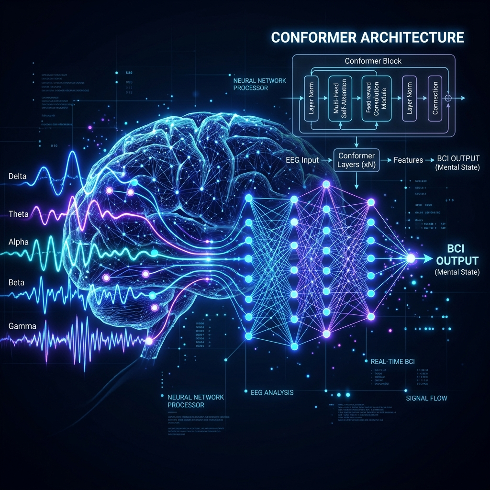
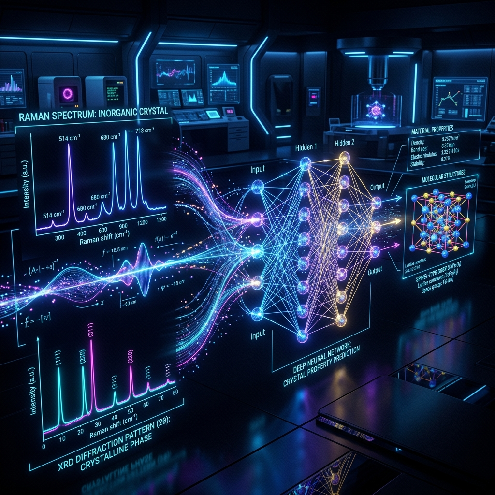
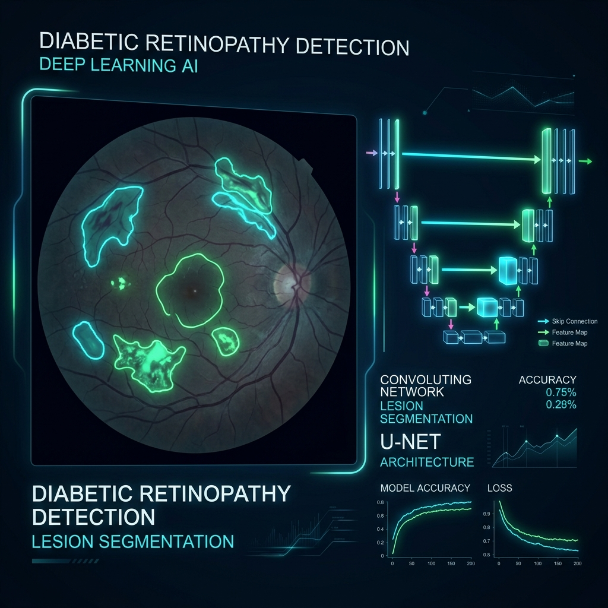
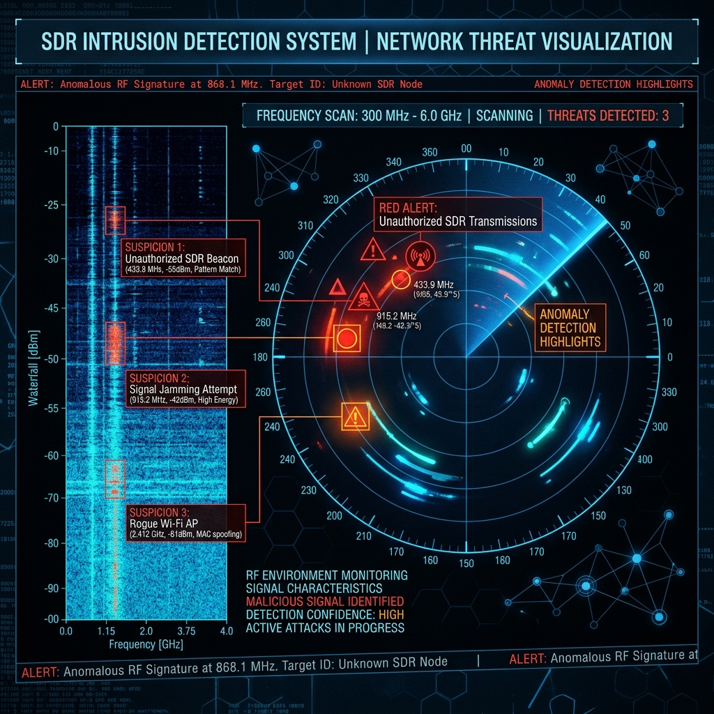
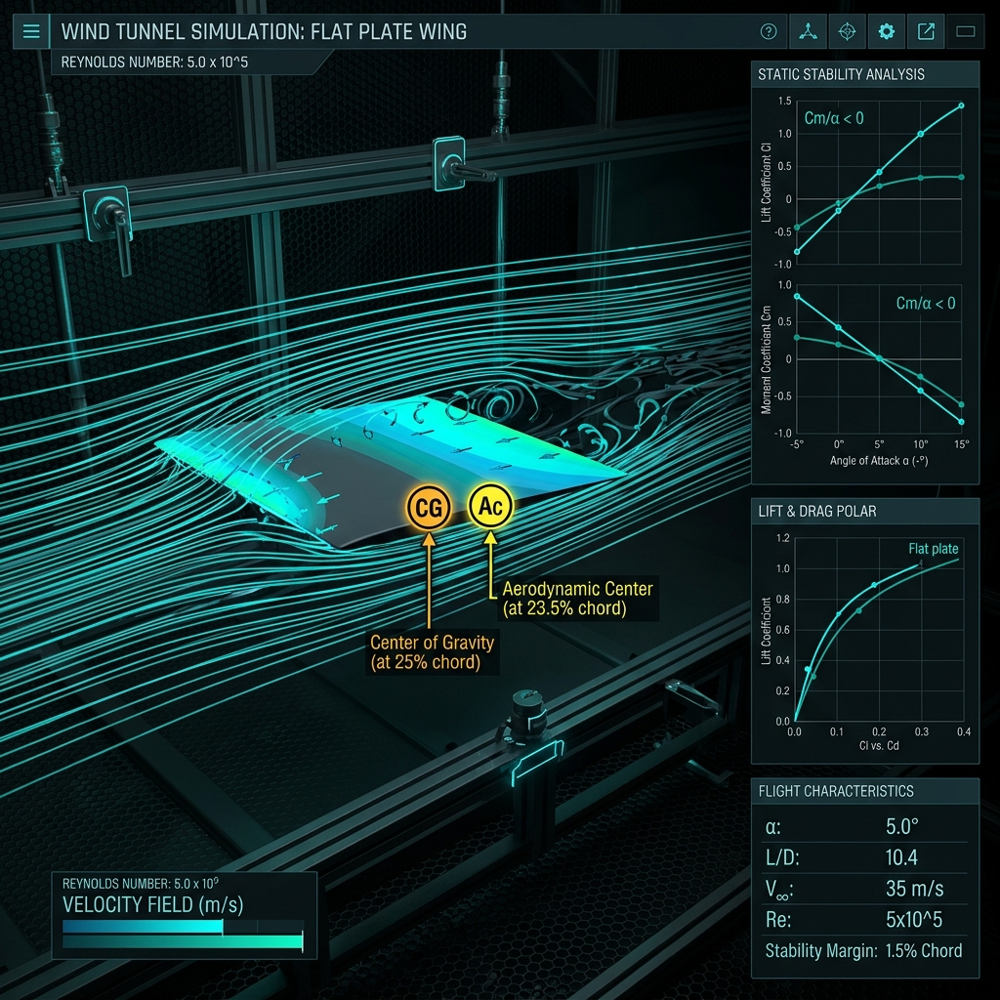
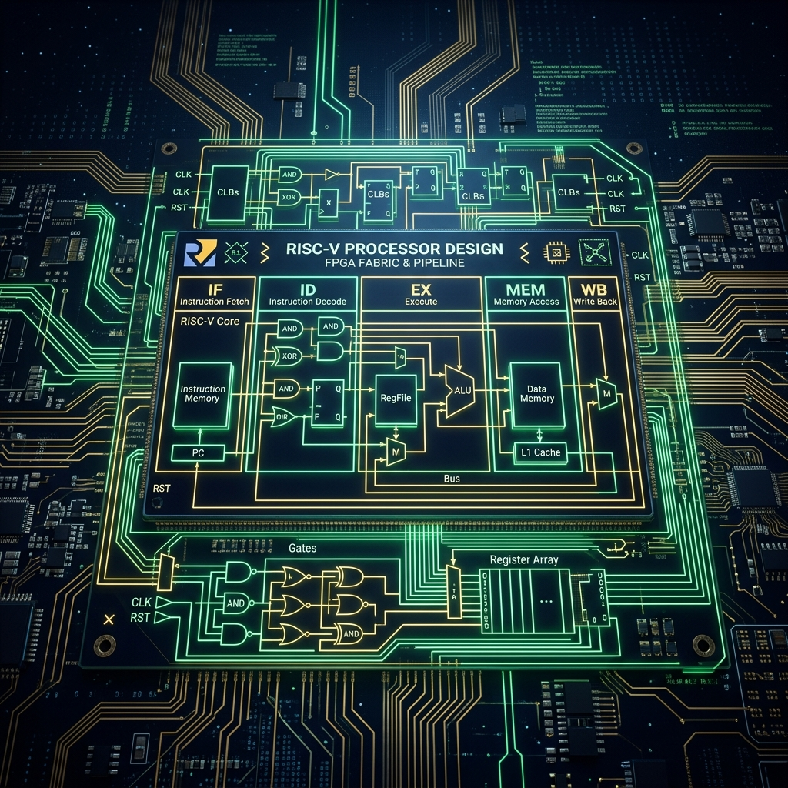

Signal Processing Engineer
Building intelligent systems at the intersection of hardware and AI — from EEG brain decoding to edge-deployed deep learning.
I'm a Mechatronics Engineer with a strong passion for technology, particularly in signal processing, communication systems, and data-driven solutions. Currently pursuing my M.Tech in Signal Processing and Communication Engineering at IIT Bhubaneswar.
My work spans EEG-based brain-computer interfaces, spectroscopy-driven material property prediction, medical image segmentation for diabetic retinopathy, SDR-based intrusion detection, and FPGA/RISC-V hardware design — bridging the gap between cutting-edge AI research and real-world deployment.
From brain-computer interfaces to edge-deployed material science models — here's a selection of my most impactful work.

01Multi-level EEG neural language decoding framework using Graph-Conformer encoder with Mamba SSM and sequence-level reward optimization (SCST/PPO) for brain-computer interfaces.

02Spectroscopy-to-property prediction for inorganic materials. Features LiteSpecNet architecture with edge deployment via TorchScript/ONNX, achieving 180+ samples/sec on CPU with 0.067MB model size.

03Lightweight diabetic retinopathy lesion segmentation using Ghost Modules, Coordinate Attention, DW-ASPP, and Deep Supervision. Deployable on Raspberry Pi via TFLite with 2× parameter reduction.

04Software-defined radio based network intrusion detection system using CGA-NET deep learning architecture. Features real-time RF signal analysis with ablation studies and edge deployment benchmarks.

05Experimental demonstration of flat-plate wing flight stability via center of gravity control. Includes aerodynamic coefficient computation, CG-AC analysis, and automated data processing of 1400+ data files.

06RISC-V CPU design on FPGA using Makerchip platform with keypad interfacing (PADLOCK project). Implements minimalistic architecture suitable for ASIC and FPGA applications using TL-Verilog.
Peer-reviewed journal submissions bridging spectroscopy, computer vision, and communication systems with deep learning.
Benchmark framework for predicting inorganic material properties from Raman/XRD spectra using lightweight neural networks. Features LiteSpecNet architecture with edge deployment achieving 180+ samples/sec on CPU.
⏳ Under ReviewRevised submission on spectroscopy-driven property prediction with supervised contrastive learning and multi-task heads for chemical family classification and property regression.
✅ Accepted (Poster)Context-Guided Attention Network for real-time RF signal intrusion detection using software-defined radio. Includes Qualcomm AI Hub edge deployment benchmarks and comprehensive ablation studies.
✅ AcceptedNovel lightweight architecture combining Ghost Modules, Coordinate Attention, and Deep Supervision for diabetic retinopathy detection on the IDRiD dataset with edge deployment on Raspberry Pi.
✅ AcceptedDeep learning framework for robust Unmanned Aerial Vehicle (UAV) detection and classification using radio frequency spectral analysis.
✅ AcceptedOpen to research collaborations, internship opportunities, and interesting conversations.
Feel free to reach out for research collaborations, technical discussions, or just to say hello. I'll get back to you as soon as possible.